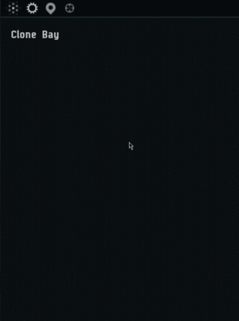
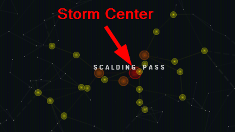
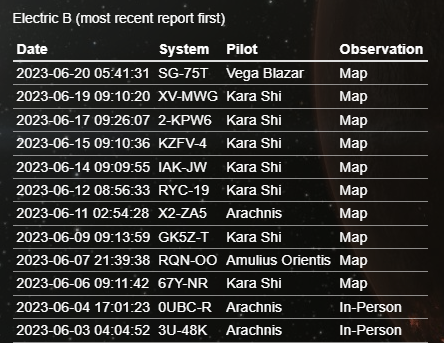

Signal Cartel Storm Tracking Service: Difference between revisions
Vega Blazar (talk | contribs) |
Vega Blazar (talk | contribs) |
||
| Line 28: | Line 28: | ||
</br>''Note:'' The red and orange systems together form the storm's core and receive the strongest effects, while the yellow systems form the storm's periphery and receive the weakest effects. | </br>''Note:'' The red and orange systems together form the storm's core and receive the strongest effects, while the yellow systems form the storm's periphery and receive the weakest effects. | ||
== How | == How Do I Report the Weather? == | ||
* Allison provides the Storm Tracker interface that enables our Storm Tracking Service to publicly report the weather. You can help report the weather by [https://evescoutrescue.com/esrc/storm_tracker.php '''clicking here'''] and then using the "STORM TRACKER" tab.</br> | * Allison provides the Storm Tracker interface that enables our Storm Tracking Service to publicly report the weather. You can help report the weather by [https://evescoutrescue.com/esrc/storm_tracker.php '''clicking here'''] and then using the "STORM TRACKER" tab.</br> | ||
[[File:Storm Tracker Tab.png|500px]] | [[File:Storm Tracker Tab.png|500px]] | ||
Latest revision as of 13:52, 20 September 2023
Nullsec is currently experiencing wandering storms that slowly travel between systems called Metaliminal Storms. These storms produce a variety of environmental effects that impact all ships brave enough to enter them. Help us report the stormy weather for the benefit of all capsuleers!
What Exactly Are Metaliminal Storms?[edit]
EVE Uni has a very nice overview of the mechanics and various system effects here: Metaliminal Storms
How Do I View the New Eden Weather Report?[edit]
While not officially overseen by EvE-Scout Rescue (ESR), the Signal Cartel Storm Tracking Service conveniently resides on the ESR website for the use and public benefit of all of New Eden.
- The "New Eden Weather Report" is visible at the bottom of the ESR homepage in the form of a crawler. It displays the Metaliminal Storms across K-space, as reported by our storm spotting Signaleers.
- Clicking on the crawler brings up the Signal Cartel Storm Tracker Public Website.
{kind=link}
How Do I Find the Storms In-Game?[edit]
- Metaliminal Storms are found on your in-game map (F10), however you first must select them:
(if the animated GIF does not load, please click here.)

{kind=link}
- There are always eight storms moving around in New Eden (two of each type).
{kind=link}
- If you zoom in on one of the storms, you will see systems highlighted in different colors.
- The large red system is the epicenter or storm center (this is what you report)
- Systems one jump away from the storm center are orange.
- Systems two and three jumps away are yellow.

Note: The red and orange systems together form the storm's core and receive the strongest effects, while the yellow systems form the storm's periphery and receive the weakest effects.
{kind=link}
How Do I Report the Weather?[edit]
- Allison provides the Storm Tracker interface that enables our Storm Tracking Service to publicly report the weather. You can help report the weather by clicking here and then using the "STORM TRACKER" tab.
{kind=link}
Compare the In-Game Weather with the Last Report[edit]
- Bring up the in-game map displaying Metaliminal Storms (see above on how to do this)
- Compare the storm center (large red system) for each storm on the in-game map to the "Last Known System" reported on the Storm Tracker interface.
{kind=link}
If the Storm Center DID NOT Move[edit]
- A new report is NOT needed.
If the Storm Center Moved[edit]
- A new report is needed.
{kind=link}
{kind=link}
- To update the location of a storm once it has moved:
- Find it in the table based on it's previous storm center location
- Click the "New Report" button and enter the new storm system center.
{kind=link}
- If two or more storm centers previously occupied the same system, then it will require eyes in the system to update the correct storm type as to where it has moved to. Likewise, if it is unclear for any reason (like the storm is not in an adjacent system to the previous known center or you're not confident), then it's best to put eyes in the system before updating.
- If this occurs, please click the "Confirmed in-system" check box before submitting your New Report.
Protip: If you click on the storm name in the Storm Track table, then it will list the history for that storm at the bottom, as you can see from the screenshot for storm Electric B. 
{kind=link}
Frequently Asked Questions (FAQ)[edit]
Q: How do the storm centers move? A: Storms move one system at a time and always to an adjacent system.
Q: How often do the storm centers change location? A: Storms typically move every 24 to 48 hours.